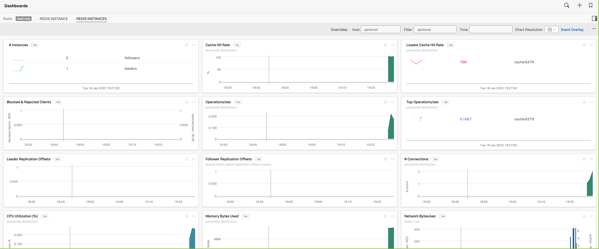

Lab: OpenTelemetry & Get Data In¶
We are going to work in the directory o11y-bootcamp/service/src.
Your first task: Write a python app to count words in a text file.
No, wait - we've already done that for you.
Getting started¶
The task is to write a python app to count words in a text file. Here is how to get to the milestone that completes this step:
git checkout 01service
This will put you on the first milestone.
In case you have already worked on a milestone, you might see an error like:
error: Your local changes to the following files would be overwritten by checkout:
app.py
Please commit your changes or stash them before you switch branches.
Aborting
This is because your work conflicts with changes on the milestone. You have the following options:
-
If you have worked on a task and want to progress to the next one and DROP all your changes:
git reset --hard && git clean -fdx && git checkout serviceYou will have to re-apply any local changes like settings tokens or names.
-
To preserve your work but move it out of the way, you can use
git stash && git checkout serviceTo restore your work, switch to the previous milestone (
mainin this case) and retrieve the stashed changes:git checkout main && git stash popSometimes you run into conflicting changes with this approach. We recommend you use the first option in this case.
-
During development changes are recorded by adding and commiting to the repository. This is not necessary for this workshop.
Use the first option and proceed.
To compare two milestones, use
git diff main..01service
To compare what you have with a milestone, , e.g. the milestone 01service use
diff -ru $(git rev-parse --show-toplevel) ~/tmp/milestones/01service
...
diff --git a/bootcamp/service/src/app.py b/bootcamp/service/src/app.py
index 9bcae83..b7fc141 100644
--- a/bootcamp/service/src/app.py
+++ b/bootcamp/service/src/app.py
@@ -1,10 +1,12 @@
+import json
import re
-from unicodedata import category
+from flask import Flask, request, Response
...
Task 1: Service¶
If you have not done so already, checkout the milestone for this task:
git reset --hard && git clean -fdx && git checkout 01service
Let's get python sorted first. On a provided AWS instance, python3 is already available.
If you are on a Mac:
brew install python@3
On another system, install a recent version of python (i.e. 3.x) with your package manager.
Navigate to o11y-bootcamp/service/src and run the provided python service:
python3 -m venv .venv
source .venv/bin/activate
pip install -r requirements.txt
python3 app.py
* Serving Flask app 'app' (lazy loading)
* Environment: production
WARNING: This is a development server. Do not use it in a production deployment.
Use a production WSGI server instead.
* Debug mode: off
* Running on all addresses.
WARNING: This is a development server. Do not use it in a production deployment.
* Running on http://10.42.1.202:5000/ (Press CTRL+C to quit)
Then test the service (in a separate shell) with:
curl -X POST http://127.0.0.1:5000/wordcount -F text=@hamlet.txt
[["in", 436], ["hamlet", 484], ["my", 514], ["a", 546], ["i", 546], ["you", 550], ["of", 671], ["to", 763], ["and", 969], ["the", 1143]]%
The bootcamp contains other text files at ~/nlp/resources/corpora. To use a random example:
SAMPLE=$(find ~/nlp/resources/corpora/gutenberg -name '*.txt' | shuf -n1)
curl -X POST http://127.0.0.1:5000/wordcount -F text=@$SAMPLE
To generate load:
FILES=$(find ~/nlp/resources/corpora/gutenberg -name '*.txt')
while true; do
SAMPLE=$(shuf -n1 <<< "$FILES")
curl -X POST http://127.0.0.1:5000/wordcount -F text=@${SAMPLE}
sleep 1
done
Task 2: Prometheus Metrics¶
We need visibility into performance - let us add metrics with Prometheus.
Install the Python Prometheus client as a dependency:
echo "prometheus-client" >> requirements.txt
python3 -m venv .venv
.venv/bin/pip install -r requirements.txt
Import the modules in app.py:
import prometheus_client
from prometheus_client.exposition import CONTENT_TYPE_LATEST
from prometheus_client import Counter
Define a metrics endpoint before @app.route('/wordcount', methods=['POST']):
@app.route('/metrics')
def metrics():
return Response(prometheus_client.generate_latest(), mimetype=CONTENT_TYPE_LATEST)
And use this python snippet after app = Flask(__name__) to define a new counter metric:
c_recv = Counter('characters_recv', 'Number of characters received')
Increase the counter metric after data = request.files['text'].read().decode('utf-8'):
c_recv.inc(len(data))
Test that the application exposes metrics by hitting the endpoint while the app is running:
curl http://127.0.0.1:5000/metrics
The milestone for this task is 02service-metrics.
Task 3: OpenTelemetry Collector¶
You will need an access token for Splunk Observability Cloud. Set them up as environment variables:
export SPLUNK_ACCESS_TOKEN=YOURTOKEN
export SPLUNK_REALM=YOURREALM
Start with the default configuration for the OpenTelemetry Collector and name it collector.yaml in the src directory.
You can also start with a blank configuration, which is what the milestone does for clarity.
Then run OpenTelemetry Collector with this configuration in a docker container:
docker run --rm \
-e SPLUNK_ACCESS_TOKEN=${SPLUNK_ACCESS_TOKEN} \
-e SPLUNK_REALM=${SPLUNK_REALM} \
-e SPLUNK_CONFIG=/etc/collector.yaml \
-p 13133:13133 -p 14250:14250 -p 14268:14268 -p 4317:4317 \
-p 6060:6060 -p 8888:8888 -p 9080:9080 -p 9411:9411 -p 9943:9943 \
-v "${PWD}/collector.yaml":/etc/collector.yaml:ro \
--name otelcol quay.io/signalfx/splunk-otel-collector:0.41.1
The milestone for this task is 03service-metrics-otel.
Task 4: Capture Prometheus metrics¶
Add a prometheus receiver to the OpenTelemetry Collector configuration so that it captures the metrics introduced in Task 2 from the application.
Hint: The hostname host.docker.internal allows you to access the host from within a docker container.
Validate that you are getting data for the custom metric characters_recv_total introduced in Task 2.
The milestone for this task is 04service-metrics-prom.
Task 5: Dockerize the Service¶
Dockerize the service. Use this Dockerfile as a skeleton:
ARG APP_IMAGE=python:3
FROM $APP_IMAGE as base
FROM base as builder
WORKDIR /app
RUN python -m venv .venv && .venv/bin/pip install --no-cache-dir -U pip setuptools
COPY requirements.txt .
RUN .venv/bin/pip install -r requirements.txt --no-cache-dir -r requirements.txt
FROM base
WORKDIR /app
COPY --from=builder /app /app
COPY app.py .
ENV PATH="/app/.venv/bin:$PATH"
Add the appropriate CMD at the end to launch the app.
Stop other instances of the app if you had any running.
Then build and run the image:
docker build . -t wordcount
docker run -p 5000:5000 wordcount:latest
Test the service in another shell:
curl -X POST http://127.0.0.1:5000/wordcount -F text=@hamlet.txt
The milestone for this task is 05docker.
Task 6: Docker Compose¶
The development team wants to use a containerized redis cache to improve performance of the service.
Stop any other running containers from this app or the OpenTelemetry Collector.
Add a docker-compose.yaml file for the python app to prepare us for running multiple containers.
A skeleton to run the service on port 8000 might look like this. What port do you need to map 8000 to for the service to work?
version: '3'
services:
yourservicename:
build: .
expose:
- "8000"
ports:
- "8000:XXXX"
Build the service:
docker-compose build
Then run the whole stack:
docker-compose up
Test the service with curl by hitting the exposed port.
The milestone for this task is 06docker-compose.
Task 7: Container orchestration¶
Add the OpenTelemetry Collector service definition to the docker-compose setup.
The milestone for this task is 07docker-compose-otel.
Task 8: Monitor containerized service¶
The development team has started using other containerized services with docker compose. Switch to the provided milestone 08docker-compose-redis with the instructions from "Getting Started".
Add configuration to the OpenTelemetry Collector to monitor the redis cache.
Check that you are getting data in the Redis dashboard:

The milestone for this task is 08docker-compose-redis-otel.
Task 9: Kubernetes¶
The development team has started using Kubernetes for container orchestration. Switch to the provided milestone 09k8s with the instructions from "Getting Started".
Rebuild the container images for the private registry:
docker-compose build
Push the images to the private registry:
docker-compose push
Then deploy the services into the cluster:
kubectl apply -f k8s
Test the service with
ENDPOINT=$(kubectl get service/wordcount -o jsonpath='{.spec.clusterIP}')
curl http://$ENDPOINT:8000/wordcount -F text=@hamlet.txt
Configure and install an OpenTelemetry Collector using Splunk's helm chart:
-
Review the configuration how-to and the advanced configuration to create a
values.yamlthat adds the required receivers for redis and prometheus. -
Use the environment variables for realm,token and cluster name and pass them to
helmas arguments.
The milestone for this task is 09k8s-otel.